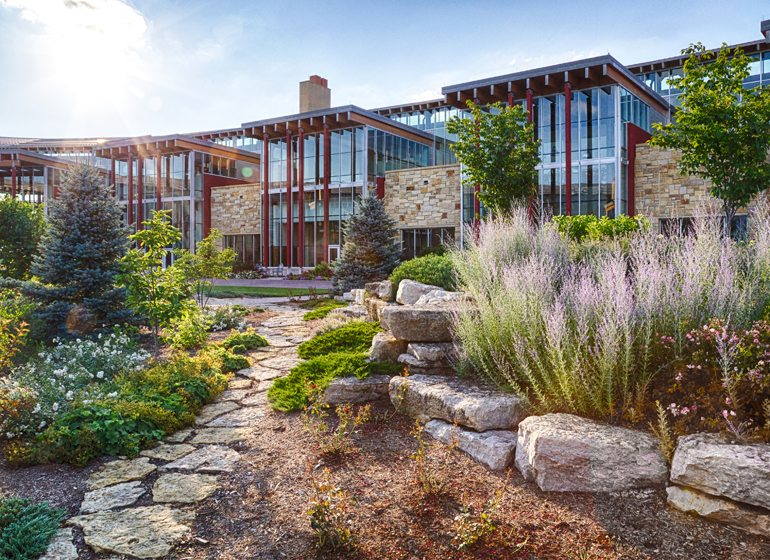

Justin's Life and Career
Origin
On a warm summer night in June of 1997, a kid by the name of Dale Justin Wright was born in a hospital in Phoenix, Arizona, to two loving parents. Little did Justin know his journey as a youth would be young, wild and free, moving often and far. Justin would move to Virgina, Germany, North Carolina, and finally to Missouri. As Justin got older, only then did he realize that he wished he would've been older when this traveling was occuring as he didn't care to see the sites that his parents took him to. That was one thing at that time that Justin did not have in common with his parents, something he did have in common was their competitiveness. From a young age, Justin's parents taught him to never quit, never give up, and give everything his all. This caused Justin to become highly competitive.
Growing Up
The Experience
Justin was accepted to one of the best STEM schools in Missouri, only thanks to his Math and Science skills (Reading and Language Arts did not help). As you could probably guess, Justin decided to study Chemistry while in college, little did he know that things would change for him and what he was interested would become disinteresting. Justin had it easy early in college. His competitiveness ensured he would get his work done and make sure he understood it for applying later during tests or in class. Only in his third year of classes would Justin come to and understanding that chemistry is not what he wanted to do with his life and that technology was more interesting to him. While in college though outside of class, Justin would go to join and lead a fraternity on his campus, help throw one of the biggest celebrations in missouri, and find the love of his life...
My One<3
A New World
Justin graduated from college with a degree in chemistry in Dec. 2019. Justin would go on to move with his tiny family of 4 to Madison, WI where he would begin his journey into the industry of technology. Justin was a Quality Assurance Analyst at Epic Systems. Justin was super excited to work at Epic, the campus was huge and the work was fun, along with the people! Justin's job was to make sure that what've went out the door and to the user was best for the user. It was what they wanted, and worked smooth and clean enough that the user and easily get the flow of use and pick it up quick. Justin's team was small though, and going through a rough time. Justin would help other teams on their work, he would also go on to work on government required software as well as country-wide software. Justin was met was quick and deadly deadlines as well as slow and soft deadlines. None the less, Justin stood up to the challenge and took every chance he could to have fun and learn all the ins and outs of what he was doing so that the next job he could pick up where he left off on the fun and experiences.
I cannot keep going on this I think I have already spent a little too much time and if I don't physically stop myself I might go on forever which is not necessary. However I would like to take this space, as most autobiographies have a space, to say a quick thank you in case some people who might read this in the future. I want to say a big thank you to my Parents, Friends, Wife, and whoever else might be reading this! Mom and Dad, thank you guys so much for pushing me to be the best version of myself and always keeping an eye out for me. I have my people now and chose well thanks to how you raised me and the qualities you gave me. I am nothing if not an image of you both. To my four friends from highschool, thank you guys for always being you, I know we don't get to talk too much but I miss the old days of hanging out in basements, going to the local places to do absolutely nothing but talk, play indian ball down at the park, and all the other fun we had! To Roxanne, thank you so much for being you. I love the time we get to spend together and getting to do everything with you. I look forward to having a long and fulfilling life together with our zoo of animals that we will always have, and I look forward to making you smile everyday. Last but definitely not least, thank YOU. Yes, YOU! You took the time to read this story of mine that I put together myself. This story is sloppy and all over the place (there is a reason I am doing technology and not becoming a writer...). You reading this and taking your time to get to this part means that took some serious dedication out of you so thank you. To show my ultimate thanks, here are some of my animals!
//Add Pictures of the Animals!